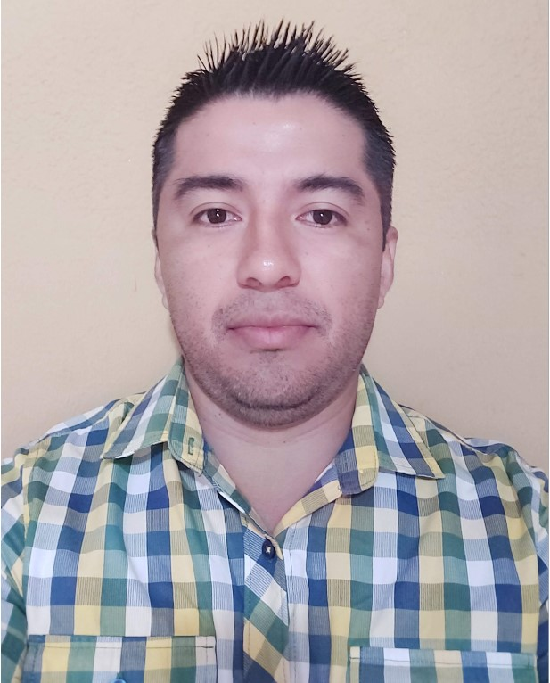

HOJA DE VIDA
NOMBRE: Yasser Vladimir Pérez Pavón

EDAD: 34 años
NACIONALIDAD: Nicaragüense
#ID: 401-100886-0008P
POSTGRADO: MasterGisOnline, Esri, España, 2021
PREGRADO: Universidad Nacional Autónoma de Honduras, 2011
EDUC. INTE: Instituto Salesiano "San Miguel" 2002
EXPERIENCIA LABORAL:
a. Jefe de Ingeniería Agrícola, Compañía Azucarera Tres Valles (2012-Actualidad)
b. Supervisor de Ingeniería, Asociación de Profesionales (2010-2011)
c. Consultor de Campo, Tecnología en Sistemas de Información Geográfica (2003-2009)
FORMACIÓN TÉCNICA:
- Curso de Autocad Civil 3D
- Capacitación en Procesamiento de Imágenes Satelitales
- Curso de Fotogrametría con drones
- Capacitación configuración de drone DJI Matrice100
- Seminario de Diseño de Campo, Adecuación de Tierras y Obras de Control de Inundaciones
- Manejo de ArcGis9.3 y 10.0
HABILIDADES PERSONALES:
- Uso de GPS´s: Trimble R8s, Geo7x, GeoXH, GeoXT;
- Diseños de mapas en AutoCad.
- Manejo fundamental de AutoCad y Autocad Civil 3D con aplicaciones de mapeo.
- Manejo del Software Precisionmapper y Pix4D para procesamiento de imágenes a partir de vuelos con drone.
- Uso del software SNAP (Sentinel Application Plataform) para el procesamiento de imágenes satelitales SENTINEL.
REFERENCIAS PERSONALES:
• Ing. Jorge Bulnes
Gerente General AGROPALMA
Cel. (00504)9967-2673
• Ing. Prisca Rivera
Consultora Independiente Control de Calidad de Procesos
Cel. (00504)9669-2251
• Ing. José Santos Flores
Coordinador de Producción, Compañía Azucarera "Tres Valles"
Cel. (00504)9750-3479